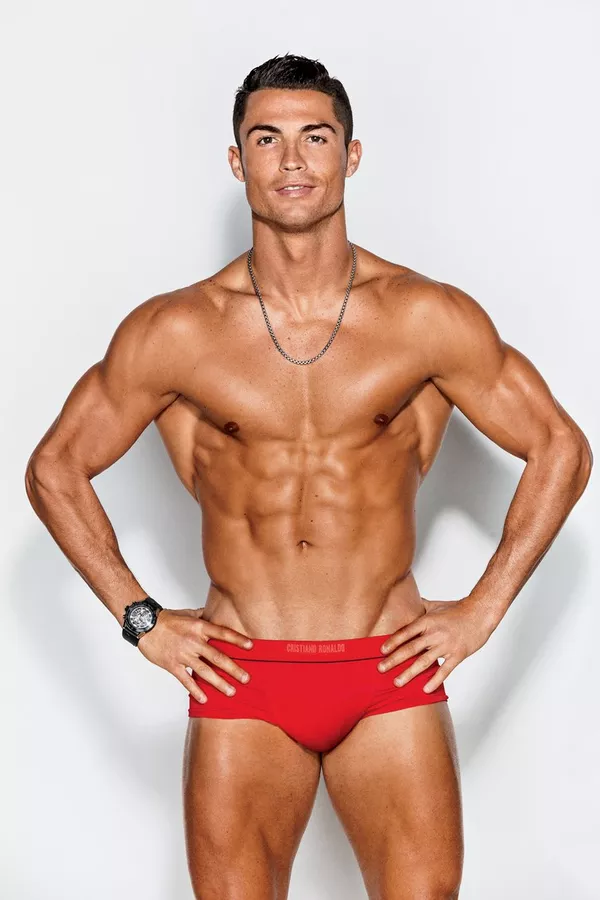

Cristiano Ronaldo
Create a Flex Container
1
2
3
A Flexible Layout must have a parent element with the display property set to flex.
Direct child elements(s) of the flexible container automatically becomes flexible items.

 Cristiano Ronaldo dos Santos Aveiro é um futebolista português que atua como extremo-esquerdo ou ponta de lança. Atualmente joga pelo Al-Nassr, da Arábia Saudita e pela Seleção Portuguesa, onde é capitão. É o jogador com mais golos na história do futebol em jogos oficiais,sendo simultaneamente o jogador com mais golos na história a nível de seleções, bem como a nível de clubes.
Ronaldo é geralmente considerado o melhor e mais completo futebolista bem como o maior artilheiro do mundoopnião da grande maioria dos especialistas do esporte, seus atributos físicos, suas habilidades goleadoras, sua mentalidade vencedora, sua liderança e seu desempenho sob pressão, o tornam um dos melhores futebolistas de todos os tempos, com alguns ainda o colocando como o melhor jogador de sempre.Futebolista histórico, foi eleito o melhor jogador do mundo pela FIFA e pela France Football recebendo o prémio Bola de Ouro (que por um período passou a denominar-se Bola de Ouro da FIFA) um total de cinco vezes: 2008, 2013, 2014, 2016 e 2017. Também venceu o prémio Bota de Ouro da UEFA num total de quatro vezes. Ganhou três vezes o prémio de Melhor Jogador da UEFA na Europa e uma vez o prémio de Melhor Jogador de Clubes da UEFA, além disso, em 2020 foi escalado no Dream Team da Bola de Ouro. Nascido e criado em Funchal, Portugal, Ronaldo começou a sua carreira nas categorias de base do Clube de Futebol Andorinha de Santo António. Para o ano 1995, foi ao Clube Desportivo Nacional e o seu sucesso com a equipa levou-o a assinar com o Sporting Clube de Portugal por duas temporadas, conseguindo obter com este último a Supertaça de Portugal em 2002.
Cristiano Ronaldo dos Santos Aveiro é um futebolista português que atua como extremo-esquerdo ou ponta de lança. Atualmente joga pelo Al-Nassr, da Arábia Saudita e pela Seleção Portuguesa, onde é capitão. É o jogador com mais golos na história do futebol em jogos oficiais,sendo simultaneamente o jogador com mais golos na história a nível de seleções, bem como a nível de clubes.
Ronaldo é geralmente considerado o melhor e mais completo futebolista bem como o maior artilheiro do mundoopnião da grande maioria dos especialistas do esporte, seus atributos físicos, suas habilidades goleadoras, sua mentalidade vencedora, sua liderança e seu desempenho sob pressão, o tornam um dos melhores futebolistas de todos os tempos, com alguns ainda o colocando como o melhor jogador de sempre.Futebolista histórico, foi eleito o melhor jogador do mundo pela FIFA e pela France Football recebendo o prémio Bola de Ouro (que por um período passou a denominar-se Bola de Ouro da FIFA) um total de cinco vezes: 2008, 2013, 2014, 2016 e 2017. Também venceu o prémio Bota de Ouro da UEFA num total de quatro vezes. Ganhou três vezes o prémio de Melhor Jogador da UEFA na Europa e uma vez o prémio de Melhor Jogador de Clubes da UEFA, além disso, em 2020 foi escalado no Dream Team da Bola de Ouro. Nascido e criado em Funchal, Portugal, Ronaldo começou a sua carreira nas categorias de base do Clube de Futebol Andorinha de Santo António. Para o ano 1995, foi ao Clube Desportivo Nacional e o seu sucesso com a equipa levou-o a assinar com o Sporting Clube de Portugal por duas temporadas, conseguindo obter com este último a Supertaça de Portugal em 2002.
TITULOS: - Manchester United Premier League (3x) Champions League (1x) Mundial de Clubes (1x) - Real Madrid LaLiga (2x) Champions League (4x) Mundial de Clubes (3x) - Juventus Serie A Italiana (2x) - Portugal Europa League 2016 e Nations League de 2018/19
